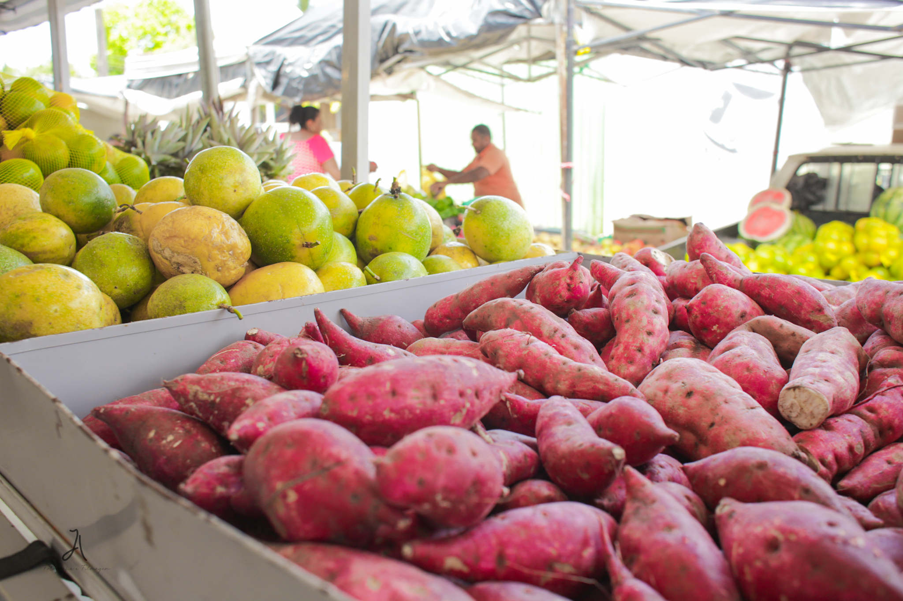

A feira reúne o que há de melhor na produção dos cooperados.Os produtos se dividem em três grandes grupos
Preços praticados na última feira (podem variar vonforme a safra)
| Produtos | Unidade | Preço(R$) |
|---|---|---|
| Alface | Maço | 3,00 |
| Ovos caipiras | Dúzia | 12,00 |
| Mel | Pote 500g | 25,00 |
| Queijo coalho | kg | 40,00 |
Para manter a organização e a qualidade,todo feirante deve seguir os passos abaixo,nesta ordem:
A feira é a vitrine do nosso trabalho.Capricho na barraca é respeito com quem compra.
Para se tornar um feirante ou tirar dúvidas,procure a administrção da cooperativa ou acesse o site oficial:
Acesse o siteFeira da Cooperativa Pindorama - Colônia Pindorama,Coruripe,Alagoas.
Voltar ao topo